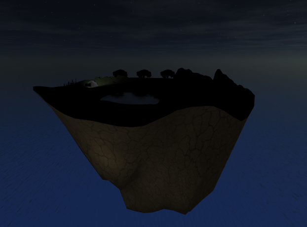
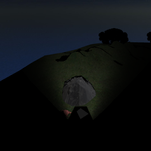

Adventure Island is an animated short movie. A floating vehicle explores a small island in 30 seconds.

The movie can either be watched in automatic or user-controlled camera mode.
In this mode, the camera moves automatically so the current scene in the movie is always visible. When the movie starts, the automatic camera mode is switched on. You can switch to the user-controlled camera mode manually (see Controls for details).
In this mode, the user can move the camera freely. It is not possible to switch back from user mode to automatic camera mode. After 30 seconds, when the movie is finished, the user-controlled camera mode is switched on automatically. The animation of the vehicle is not affected by the camera mode. However, the animations of the crab that lives under a stone and the floating crystal which turns into daylight are only triggered when the camera approaches said objects.

The animation of the crab can be triggered multiple times. The animation of the crystal can only be triggered once.
| F5 | restart movie in automatic camera mode |
| C | turn on user-controlled camera mode |
| W or Arrow-Up | move camera forwards |
| S or Arrow-Down | move camera backwards |
| A or Arrow-Left | move camera left |
| D or Arrow-Right | move camera right |
| Q | move camera up |
| E | move camera down |
| left mouse button & mouse motion | rotate camera in x- and y-direction |
| N | toggle skybox (day and night) |